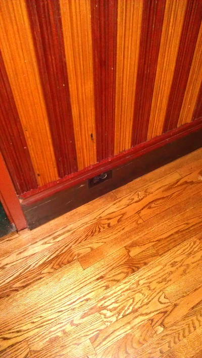
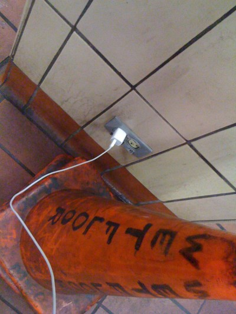

Electrical Outlets
Art class teaches about geometric versus organic shapes. A building has straight lines and right angles, so it’s geometric. A plant and curved lines and as many circles as angles, so it’s organic. Many artists draw and paint beautiful images and fruit, flowers, landscapes, and other organic beauty. When I was in art class, given the choice, I picked geometric. I loved drawing the crisp lines, and I loved bending the angles to show perspective. When I was doodling in class, and wanted to draw what I saw, the first thing I’d see was an electric outlet.
I don’t take art classes anymore. I don’t draw regularly either. But, my smart phone’s battery life does draw my eye to the nearest power source. And, sometimes, my camera goes there, too.
Sunday, December 30, 2012
Chicago Pizza

Saturday, December 14, 2012
Electric Outlets On The Internet
Wikipedia: wikipedia.org/wiki/Electrical_outlet
Tumblr: www.tumblr.com/tagged/power-outlet
Friday, October 5, 2012
Airport Security
Sunday, June 3, 2012
Middle of the Floor
Sunday, September 11, 2011
Middle of the Restaurant – Wall of Outlets
Friday, July 15, 2011
Phone Charging on the Dock
Saturday, April 2, 2011
Entrance to Mechanical Bull
Saturday, January 8, 2011
Floor-powered Car at CES
Monday, January 3, 2011
Guggenheim Museum
Wednesday, October 27, 2010
Elevator
Thursday, October 14, 2010
BART Underground
